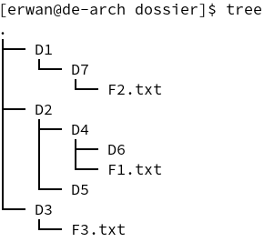

Info
Ces exercices sont également disponibles en format PDF : fiche1_vocabulaire.pdf
Exercices - Vocabulaire sur les arbres
Dessiner un arbre
Une arborescence de fichiers
Sur Linux, on peut lister récursivement les répertoires et fichiers du système à l'aide de la commande tree. Voici un exemple d'arborescence obtenue après exécution de cette commande :

Exercice 1
Dessinez un arbre représentant cette arborescence, en partant de l'arbre suivant :

- Quelle est la taille de cet arbre ?
- Combien y a t-il d'arêtes dans l'arbre ?
- Quelles sont les feuilles de l'arbre ?
En considérant que la profondeur de la racine est de 1 :
- Quelle est la profondeur du nœud D5 ?
- Quelle est la hauteur de l'arbre ?
- Cet arbre est-il un arbre binaire ? Pourquoi ?
Correction exercice 1
- La taille est de 11, car il y a 11 noeuds dans l'arbre.
- En sachant que chaque noeud, à l'exception du noeud racine, possède exactement une arête le reliant à son noeud père, le nombre d'arêtes d'un arbre est toujours \(taille - 1\). Ici, le nombre d'arêtes est donc de 11 - 1 = 10.
- Une feuille est un noeud qui n'a pas de noeuds fils. Ici, les feuilles sont au nombre de 5 : F2.txt, F6, F1.txt, D5, F3.txt.
- La profondeur du noeud D5, en considérant que la racine a une profondeur de 1, est le nombre de noeuds qui le sépare de la racine : Elle est donc ici de 3.
- La hauteur d'un arbre est la plus grande profondeur des feuilles de l'arbre, ici elle est donc de 4.
- Dans un arbre binaire, un noeud ne peut avoir qu'un, deux ou trois noeuds fils. Ici, ce n'est pas le cas, l'arbre n'est donc pas un arbre binaire (on dira que c'est un arbre enraciné).
Arbre d'une page HTML
Voici le code HTML d'une page web :
<html>
<head>
<meta charset="utf-8">
<title>Ma superbe page</title>
</head>
<body>
<h1>Mon super titre</h1>
<p>Mon super paragraphe</p>
<img src="mon_image.png" alt="ma superbe image" />
</body>
<footer>
<p>Un pied de page</p>
</footer>
</html>
L'arbre (appelé arbre DOM) représentant ce code HTML est le suivant :

Exercice 2
À votre tour, dessinez l'arbre DOM représentant la page HTML suivante :
<html>
<head>
<meta charset="utf-8">
<link href="main.css" rel="stylesheet">
<title>Pokémons</title>
</head>
<body>
<section>
<h1>Types des pokémons</h1>
<ul>
<li>FEU</li>
<li>FOUDRE</li>
<li>EAU</li>
<li>HERBE</li>
<li>NORMAL</li>
</ul>
</section>
</body>
</html>
- Quelle est la taille de l'arbre obtenu ?
- Quelle est la hauteur de l'arbre obtenu :
- Si la profondeur de la racine est de 0 ?
- Si la profondeur de la racine est de 1 ?
- Quels types d'éléments représentent les feuilles de l'arbre ?
- Si les nœuds de l'arbre étaient des instances d'une classe
Noeudcaractérisés par une étiquette (html,body, etc) et des données, quelles pourraient être ces données ? (voir la balisemetaoulinkdu code ci-dessus.)
Correction exercice 2
Voici l'arbre obtenu à partir de ce code HTML :

- La taille est de 21 car il y a 21 noeuds* dans l'arbre.
- La hauteur est la profondeur des feuilles les plus éloignées de la racine, elle est de 5 si la profondeur de la racine vaut 0, et de 6 si la profondeur de la racine vaut 1.
- Les feuilles de l'arbre représentent :
- le texte brut contenu à l'intérieur des balises ouvrantes et fermantes,
- Les balises autofermantes (comme la balise
meta,link, etc.)
- Pour représenter correctement une page web, on aurait besoin d'un objet permettant de stocker les attributs associés aux balises. Par exemple ici, les attributs de la balise
linksonthref(qui vautmain.css, un fichier CSS) etrel(qui vautstylesheet, indiquant que la ressource est une feuille de style CSS). En Python, on pourrait imaginer par exemple de stocker ces attributs dans un dictionnaire.
Arbre d'une expression arithmétique
Voici un arbre binaire représentant l'expression arithmétique \((6 + 9) / 3\) :
Exercice 3
À votre tour, dessinez l'arbre binaire correspondant à l'expression \(\frac{5*8}{30-(8*3)}\).
- Pour quels opérateurs le positionnement (gauche, droit) des opérandes a une importance ? Pourquoi ?
- Quelle est la taille de l'arbre obtenu ?
- Quelles sont les feuilles de l'arbre ? Quelle remarque pouvez-vous faire ?
En considérant que la profondeur de la racine est de 0 :
- Quelle est la profondeur des feuilles les moins éloignées de la racine ?
- Quelle est la hauteur de l'arbre ?
Correction exercice 3
Voici l'arbre obtenu :

- Il a une importance pour la soustraction et la division. On n'obtient par exemple pas le même résultat en faisant \(30 - 24\) et \(24 - 30\). Ici, on a en effet décidé que le sous-arbre gauche représentait l'opérande gauche, et le sous-arbre droit l'opérande droite.
- L'arbre obtenu est de taille 9 (car il y a 9 noeuds).
- Les feuilles de cet arbre sont
5,8,30,8et3. Toutes les feuilles de l'arbre contiennent les valeurs numériques, tandis que les autres noeuds contiennent les opérateurs. - Les feuilles de l'arbre les moins éloignées de la racine sont de profondeur 2 (en prenant 0 comme profondeur pour la racine.)
- La hauteur de cet arbre est de 3.
Encadrement de la hauteur
Pour l'exercice suivant, on considérera que la profondeur de la racine d'un arbre est de 1. Voici deux arbres binaires :

Exercice 4
- Parmi ces deux arbres, lequel est un arbre filiforme ? Un arbre complet ?
- À quelle autre structure de données s'apparente un arbre filiforme ? Pourquoi ?
- Quelle est la taille de ces deux arbres ?
- Quelles sont toutes les hauteurs possibles pour une taille \(n = 5\) ?
- Établissez une relation entre la taille d'un arbre notée \(n\) et la hauteur de cet arbre notée \(h\), dans le cas où l'arbre est filiforme.
-
- Complétez l'arbre B de manière à obtenir un arbre parfait.
- Combien y a t-il de nœuds de profondeur 1, 2 et 3 dans cet arbre parfait ? En déduire combien il y aurait de noeuds de profondeur 4 et 5 dans un arbre parfait de hauteur 5 (vous pouvez dessiner un tableau).
- Établissez une relation entre le nombre de nœuds à une certaine profondeur, noté \(n_{p}\), en fonction de cette profondeur, notée \(p\).
- En déduire une expression calculant la taille \(n\) (nombre de nœuds) d'un arbre parfait en fonction de sa hauteur \(h\).
- Enfin, proposez d'abord un encadrement de la taille d'un arbre binaire notée \(n\) en fonction de la hauteur notée \(h\) (en utilisant vos réponses aux questions
5.et6.d.). À partir de l'encadrement précédent, déduire un encadrement de la hauteur d'un arbre binaire en fonction de sa taille.
Correction exercice 4
- L'arbre A est un arbre filiforme. L'arbre B est un arbre complet.
- Un arbre filiforme s'apparente à une liste chaînée. En effet, chaque noeud pointe vers un seul autre noeud de l'arbre. On verra dans le cours sur les arbres binaires de recherche que la recherche et l'insertion dans un arbre filiforme n'est pas intéressante (car même coût que sur une liste chaînée).
- Ces deux arbres sont de taille \(n = 5\).
- Un arbre de taille 5 peut être de hauteur minimale 3 (arbre B) et de hauteur maximale 5 (arbre A) avec une profondeur 1 pour le noeud racine. Les différentes hauteurs possibles sont donc 3, 4 et 5.
- Dans le cas où l'arbre est filiforme, la hauteur d'un arbre est égale à son nombre de noeuds (= sa taille). On peut donc écrire que \(n = h\).
-
a. Voici l'arbre obtenu (il suffit d'ajouter deux noeuds dans le niveau le plus bas de l'arbre pour que celui-ci soit rempli et que l'arbre devienne un arbre parfait) :

b. En notant \(p\) la profondeur et \(n_{p}\) le nombre de noeuds de profondeur \(p\) :

c. Du tableau précédent, on peut déduire la relation \(n_{p} = 2^{p-1}\).
d. Finalement, la taille notée \(n\) d'un arbre parfait en fonction de sa hauteur notée \(h\) peut se calculer de la manière suivante :
\(n = 2^{0} + 2^{1} + [...] + 2^{h-1} = 2^{h} - 1\) -
On a précédemment déterminé la taille minimale d'un arbre binaire en fonction de sa hauteur :
\(n_{min} = h\) (cas de l'arbre filiforme)
On a également determiné la taille maximale d'un arbre binaire en fonction de sa hauteur :
\(n_{max} = 2^{h} - 1\) (cas de l'arbre parfait)
On peut donc en déduire un encadrement de la taille d'un arbre binaire de façon générale, avec pour profondeur racine 1 :
\(n_{min} \leq n \leq n_{max}\)
\(h \leq n \leq 2^{h} - 1\)
À partir de l'encadrement précédent, on peut retrouver l'encadrement de la hauteur \(h\) : \(\lceil log_{2}(n+1) \rceil \leq h \leq n\)
Dénombrement d'arbres binaires
Exercice 5
Dessinez et dénombrez tous les arbres binaires possibles :
- pour une taille \(n = 1\),
- pour une taille \(n = 2\),
- pour une taille \(n = 3\),
- pour une taille \(n = 4\)
Sans les dessiner et en vous aidant des réponses précédentes, déterminez le nombre d'arbres de taille \(n = 5\).
Indice 1 exercice 5
Vous pouvez dénombrer les arbres de taille \(n = 5\) en faisant la somme des arbres dont les noeuds sont répartis de la manière suivante :
- 1 noeud racine et 4 noeuds à droite
- 1 noeud racine et 4 noeuds à gauche
- 1 noeud racine, 3 noeuds à gauche et 1 noeud à droite
- 1 noeud racine, 1 noeud à gauche et 3 noeud à droite
- 1 noeud racine, 2 noeuds à gauche et 2 noeuds à droite

En comptant le nombre de possibilités pour ces 5 cas, vous obtiendrez le nombre total d'arbres de taille \(n = 5\).
Indice 2 exercice 5
Le nombre d'arbres d'une taille \(n\) donnée peut être calculé avec le nombre de Catalan, voir page Wikipedia pour plus d'informations. (Bien sûr, ce n'est pas au programme.)
Donc, pour une taille \(n = 5\) : \(C_{5} = \frac{(2n)!}{(n+1)!n!} = \frac{10!}{6!*5!} = \frac{5040}{120} = 42\)
Il y a donc 42 arbres de taille 5.